10 資料探勘
撰寫中
10.1 什麼是資料探勘
資料探勘（Data mining）是用人工智慧、機器學習、統計學的交叉方法，在相對較大型的資料集中發現模式的計算過程。使用資料探勘技術可以建立從輸入資料學習新資訊，變成智慧的演算法或資料模式，用來預測事件或協助決策。所以，當資料太少或太髒的時候，資料探勘的效力會被影響。
資料探勘要派上用場，必須有以下條件：
- 有一些模式/模型可
學 - 很難定義這些模式/模型
- 有資料可
學這些模式/模型
資料探勘的應用範例如下：
- 天氣預測
- 搜尋建議、購物建議
- 股市預測
- 臉部辨識、指紋辨識
- 垃圾郵件標記
- 尿布啤酒
資料探勘可分為監督式學習與非監督式學習，監督式學習的特點是訓練資料中有正確答案，由輸入物件和預期輸出所組成，而演算法可以由訓練資料中學到或建立一個模式，並依此模式推測新的實例；非監督式學習則不用提供正確答案，也就是不需要人力來輸入標籤，單純利用訓練資料的特性，將資料分群分組。
此兩種學習可解決不同的問題，條列如下：
- Supervised learning 監督式學習
- Regression 迴歸：真實的’值’（股票、氣溫）
- Classification 分類：分兩類（P/N, Yes/No, M/F, Sick/Not sick）/分多類 (A/B/C/D)
- Unsupervised learning 非監督式學習
- Clustering 分群
- Association Rules 關聯式規則
在監督式學習中常見的資料探勘演算法如下：
- Linear Regression 線性迴歸
- Logistic Regression 羅吉斯迴歸、邏輯迴歸
- Support Vector Machines 支持向量機
- Decision Trees 決策樹
- K-Nearest Neighbor
- Neural Networks 神經網路
- Deep Learning 深度學習
在非監督式學習中常見的資料探勘演算法如下：
- Hierarchical clustering 階層式分群
- K-means clustering
- Neural Networks 神經網路
- Deep Learning 深度學習
以下介紹在R中使用各類演算法的方法
10.2 Regression 迴歸
Regression Analysis 迴歸分析主要用在了解兩個或多個變數間是否相關、相關方向與強度，並建立數學模型以便觀察特定變數來預測研究者感興趣的變數，常見的迴歸分析演算法包括：
- Linear Regression 線性迴歸
- Logistic Regression 羅吉斯迴歸、邏輯迴歸
10.2.1 Linear Regression 線性迴歸
首先，嘗試將Linear Regression 線性迴歸用在NBA的資料看看，做NBA得分與上場分鐘數的線性迴歸觀察
#讀入SportsAnalytics package
library(SportsAnalytics)
#擷取2015-2016年球季球員資料
NBA1516<-fetch_NBAPlayerStatistics("15-16")library(ggplot2)
ggplot(NBA1516,aes(x=TotalMinutesPlayed,y=TotalPoints))+
geom_point()+geom_smooth(method = "glm")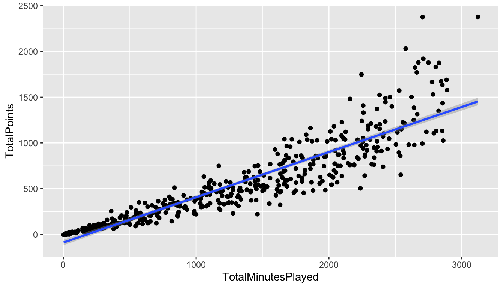
在R中，最基本的簡單線性迴歸分析為lm()，使用方法為lm(formula,data=資料名稱)，搭配formula使用，formula的撰寫方法為：依變項~自變項1＋自變項2＋….
##
## Call:
## lm(formula = TotalPoints ~ TotalMinutesPlayed, data = NBA1516)
##
## Coefficients:
## (Intercept) TotalMinutesPlayed
## -85.907 0.493由此可知總得分數TotalPoints等於0.4931 * 總出場分鐘數 -85.9071
TotalPoints = 0.4931 * TotalMinutesPlayed -85.9071
更被廣泛使用的是廣義線性迴歸模型generalized linear models (glm)，函數為glm()，使用方法與lm()類似，包括了線性迴歸模型和邏輯迴歸模型。
如果需要修改預設模型，可設定family參數：
- `family="gaussian"` 線性模型模型
- `family="binomial"` 邏輯迴歸模型
- `family="poisson"` 卜瓦松迴歸模型Gaussian distribution高斯函數是常態分布的密度函數
Binomial distribution二項分布是n個獨立的是/非試驗中成功的次數的離散機率分布
Poisson distribution次數分佈：
- 某一服務設施在一定時間內受到的服務請求的次數
- 公車站的候客人數
- 機器故障數
- 自然災害發生的次數
- DNA序列的變異數…..
以下為使用多變量線性迴歸來分析得分與上場分鐘數和兩分球出手數的關係範例
##
## Call: glm(formula = TotalPoints ~ TotalMinutesPlayed + FieldGoalsAttempted,
## data = NBA1516)
##
## Coefficients:
## (Intercept) TotalMinutesPlayed FieldGoalsAttempted
## -1.80e+01 -2.35e-04 1.26e+00
##
## Degrees of Freedom: 475 Total (i.e. Null); 473 Residual
## Null Deviance: 9.9e+07
## Residual Deviance: 2160000 AIC: 5370由此可知總得分數等於-0.0002347 * 總出場分鐘數 + 1.255794 * 兩分球出手數 -17.99
TotalPoints = -0.0002347 * TotalMinutesPlayed + 1.255794 * FieldGoalsAttempted -17.99
如需使用多變量線性迴歸來分析得分與上場分鐘數和兩分球出手數和守備位置的關係，可修改formula
##
## Call: glm(formula = TotalPoints ~ TotalMinutesPlayed + FieldGoalsAttempted +
## Position, data = NBA1516)
##
## Coefficients:
## (Intercept) TotalMinutesPlayed FieldGoalsAttempted
## 22.85222 -0.00654 1.27572
## PositionPF PositionPG PositionSF
## -39.41633 -65.03465 -38.52230
## PositionSG
## -52.17514
##
## Degrees of Freedom: 474 Total (i.e. Null); 468 Residual
## (1 observation deleted due to missingness)
## Null Deviance: 9.9e+07
## Residual Deviance: 2e+06 AIC: 5320由此可知總得分數TotalPoints和上場分鐘數和兩分球出手數和守備位置的關係為：
TotalPoints = -0.0065 * TotalMinutesPlayed + 1.28 FieldGoalsAttempted +22.85 + 22.85 PositionPF + -65.03 * PositionPG + -38.52 * PositionSF + -52.18 * PositionSG
由上述結果可發現，守備位置的變項被轉為虛擬變項 Dummy Variable：PositionPF、PositionPG、PositionSF、PositionSG，如果是控球後衛（PG），會得到：
- PositionPF=0
- PositionPG=1
- PositionSF=0
- PositionSG=0
可能有人會問，那中鋒去哪了？其實中鋒被當作基準項，也就是當守備位置是中鋒(C)時，會得到：
- PositionPF=0
- PositionPG=0
- PositionSF=0
- PositionSG=0
總結以上，多變量線性迴歸分析有下列特色：
- 假設：各變數相互獨立！
- 若自變項X是類別變項，需要建立
虛擬變項 - 在R裡，
類別變項請記得轉成factor，R會自動建立虛擬變項 - 用在
依變數為連續變數，自變數為連續變數或虛擬變數的場合
10.2.2 Logistic Regression 羅吉斯迴歸
Logistic Regression 羅吉斯迴歸常用在依變數為二元變數（非0即1）的場合，如：
- 生病/沒生病
- 錄取/不錄取
- family="binomial" 邏輯迴歸模型
以分數資料為例，分析為什麼錄取/不錄取？
| admit | gre | gpa | rank |
|---|---|---|---|
| 0 | 380 | 3.6 | 3 |
| 1 | 660 | 3.7 | 3 |
| 1 | 800 | 4.0 | 1 |
| 1 | 640 | 3.2 | 4 |
| 0 | 520 | 2.9 | 4 |
| 1 | 760 | 3.0 | 2 |
mydata$rank <- factor(mydata$rank)
mylogit <- glm(admit ~ gre + gpa + rank,
data = mydata, family = "binomial")
sum<-summary(mylogit)
sum$coefficients## Estimate Std. Error z value Pr(>|z|)
## (Intercept) -3.9900 1.1400 -3.5 0.00047
## gre 0.0023 0.0011 2.1 0.03847
## gpa 0.8040 0.3318 2.4 0.01539
## rank2 -0.6754 0.3165 -2.1 0.03283
## rank3 -1.3402 0.3453 -3.9 0.00010
## rank4 -1.5515 0.4178 -3.7 0.0002010.2.3 最佳模型篩選
到底該用哪個模型來預測，會得到最準確的結果？在迴歸模型中，常用的判斷準則包括：
- Akaike’s Information Criterion (AIC)
- Bayesian Information Criterion (BIC)
AIC和BIC都是數值越小越好，以下建立三個模型，並比較其AIC，
OneVar<-glm(TotalPoints~TotalMinutesPlayed,data =NBA1516)
TwoVar<-glm(TotalPoints~TotalMinutesPlayed+FieldGoalsAttempted,
data =NBA1516)
ThreeVar<-glm(TotalPoints~TotalMinutesPlayed+FieldGoalsAttempted+Position,
data =NBA1516)
c(OneVar$aic,TwoVar$aic,ThreeVar$aic)## [1] 6339 5367 5322在建立迴歸模型時，常會遇到到底該放多少參數？所有參數都有用嗎？這類的問題，我們可以藉由觀察coefficients來判斷參數在模型中的“實用程度”
## Estimate Std. Error t value Pr(>|t|)
## (Intercept) -1.8e+01 5.6598 -3.178 1.6e-03
## TotalMinutesPlayed -2.3e-04 0.0095 -0.025 9.8e-01
## FieldGoalsAttempted 1.3e+00 0.0222 56.467 2.5e-212## Estimate Std. Error t value Pr(>|t|)
## (Intercept) 22.8522 9.0147 2.53 1.2e-02
## TotalMinutesPlayed -0.0065 0.0092 -0.71 4.8e-01
## FieldGoalsAttempted 1.2757 0.0216 58.93 1.1e-218
## PositionPF -39.4163 9.9365 -3.97 8.4e-05
## PositionPG -65.0346 10.2693 -6.33 5.6e-10
## PositionSF -38.5223 10.4882 -3.67 2.7e-04
## PositionSG -52.1751 9.9853 -5.23 2.6e-0710.3 Decision Trees 決策樹
決策樹是在樹狀目錄中建立一系列分割，以建立模型。這些分割會表示成「節點」(Node)。每次發現輸入資料行與可預測資料行有明顯地相互關聯時，此演算法就會在模型中加入一個節點。演算法決定分岔的方式不同，視它預測連續資料行或分隔資料行而定。

以下介紹常見的Classification And Regression Tree (CART)，使用前須先安裝rpart packages (Therneau and Atkinson 2019)
以前述NBA資料為例，嘗試用用籃板/三分/助攻/抄截數據來判斷守備位置，建立決策樹的函數為rpart()，使用方式為rpart(formula, data)
## n=475 (1 observation deleted due to missingness)
##
## node), split, n, loss, yval, (yprob)
## * denotes terminal node
##
## 1) root 475 360 PF (0.15 0.23 0.21 0.18 0.23)
## 2) ThreesMade< 2.5 132 74 C (0.44 0.35 0.098 0.053 0.061)
## 4) Blocks>=4.5 89 37 C (0.58 0.38 0.011 0.011 0.011) *
## 5) Blocks< 4.5 43 31 PF (0.14 0.28 0.28 0.14 0.16)
## 10) Steals< 2.5 29 19 PF (0.17 0.34 0.14 0.21 0.14) *
## 11) Steals>=2.5 14 6 PG (0.071 0.14 0.57 0 0.21) *
## 3) ThreesMade>=2.5 343 240 SG (0.035 0.19 0.25 0.23 0.29)
## 6) Assists>=1.7e+02 96 39 PG (0.031 0.052 0.59 0.15 0.18) *
## 7) Assists< 1.7e+02 247 160 SG (0.036 0.24 0.12 0.26 0.34)
## 14) Blocks>=20 80 42 PF (0.062 0.48 0 0.26 0.2)
## 28) Steals< 60 58 21 PF (0.069 0.64 0 0.14 0.16) *
## 29) Steals>=60 22 9 SF (0.045 0.045 0 0.59 0.32) *
## 15) Blocks< 20 167 99 SG (0.024 0.13 0.17 0.26 0.41)
## 30) Assists< 82 110 68 SG (0.027 0.18 0.091 0.32 0.38)
## 60) Blocks>=4.5 63 39 SF (0.032 0.29 0.016 0.38 0.29)
## 120) ThreesMade< 14 19 9 PF (0.11 0.53 0 0.26 0.11) *
## 121) ThreesMade>=14 44 25 SF (0 0.18 0.023 0.43 0.36)
## 242) Blocks< 9.5 17 7 SF (0 0.18 0.059 0.59 0.18) *
## 243) Blocks>=9.5 27 14 SG (0 0.19 0 0.33 0.48) *
## 61) Blocks< 4.5 47 23 SG (0.021 0.043 0.19 0.23 0.51) *
## 31) Assists>=82 57 31 SG (0.018 0.035 0.33 0.16 0.46)
## 62) ThreesMade< 37 17 5 PG (0 0.12 0.71 0.059 0.12) *
## 63) ThreesMade>=37 40 16 SG (0.025 0 0.17 0.2 0.6) *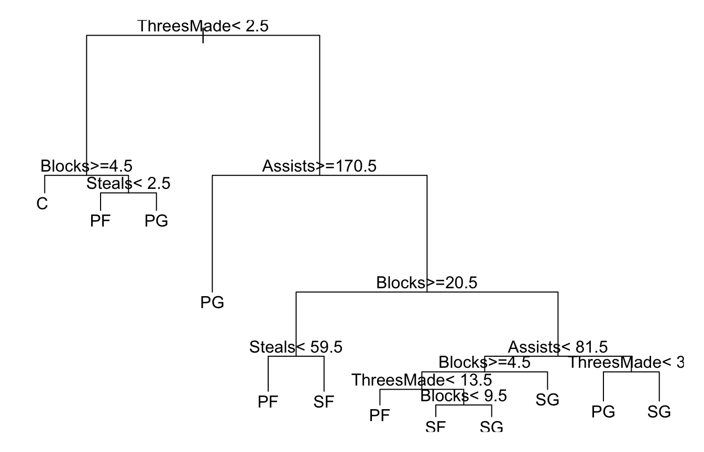
可以看出預設的plot()畫出來的圖很難看懂，可以改用rpart.plot package (Milborrow 2019)裡面的prp()

決策樹演算法決定節點的方式如下：
- Gini impurity
- Information gain
- Variance reduction
細節可參考維基百科
10.4 Clustering 分群
Clustering 分群的目的是將相近的觀察值作做分群，分群過程中，可能會遇到以下問題：
- 如何定義相近？
- 如何分群？
- 如何視覺化？
- 如何解釋分群？
10.4.1 Hierarchical clustering 階層式分群
- An agglomerative approach
- Find closest two things
- Put them together
- Find next closest
- Requires
- A defined distance
- A merging approach
- Produces
- A tree showing how close things are to each other
如何定義相近？用距離distance的概念來定義相近。
- Distance or similarity
- Continuous - euclidean distance
- Continuous - correlation similarity
- Binary - manhattan distance
- Pick a distance/similarity that makes sense for your problem
Example distances - Euclidean
\[\sqrt{(A_1-A_2)^2 + (B_1-B_2)^2 + \ldots + (Z_1-Z_2)^2}\]
Example distances - Manhattan
\[|A_1-A_2| + |B_1-B_2| + \ldots + |Z_1-Z_2|\]
Merging apporach
Agglomerative 聚合
- Single-linkage：取最小值
- Complete-linkage：取最大值
- Average-linkage：取平均值
Hierarchical clustering - hp vs. mpg

Hierarchical clustering - #1

Hierarchical clustering - #2

Hierarchical clustering - #3
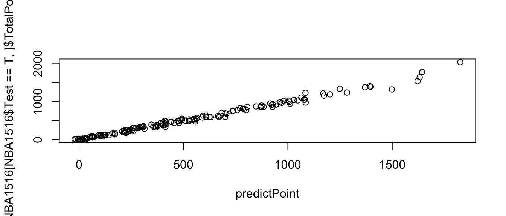
可用dist()函數計算距離，使用method=""設定計算距離的依據
## [1] 0.62 54.91 98.11 210.34 65.47 241.41dist()函數可用方法包括：
“euclidean”, “maximum”, “manhattan”, “canberra”, “binary” or “minkowski”
## [1] 0.81 79.30 108.80 275.43 84.64 347.96用hclust函數畫圖，必要參數是各觀察值的距離（可用dist()函數計算）

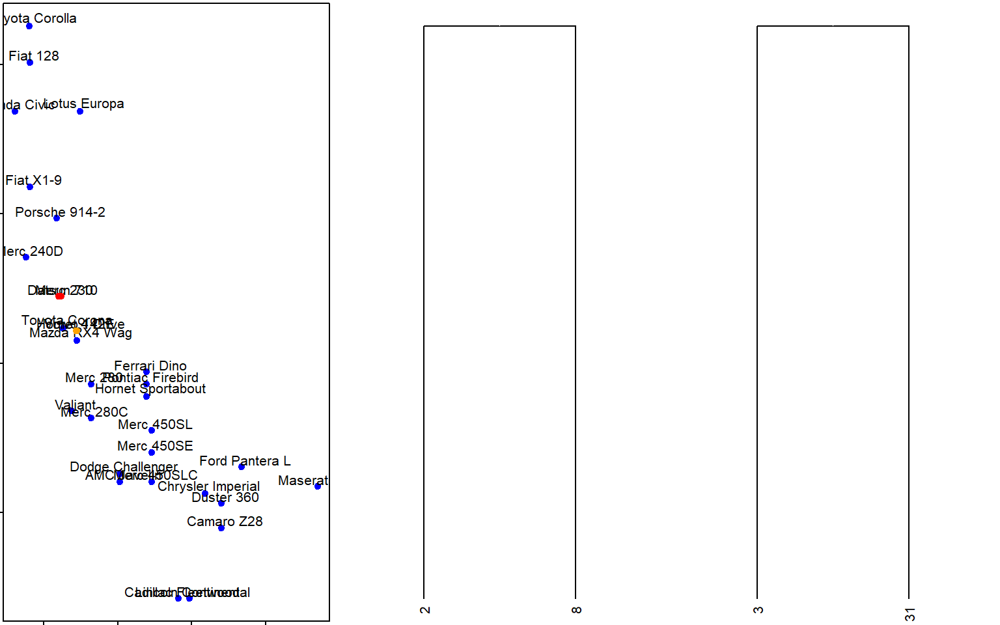
## Mazda RX4 Mazda RX4 Wag Datsun 710 Merc 240D
## 1 1 1 1
## Merc 230 Merc 280 Merc 280C Fiat 128
## 1 1 1 1
## Honda Civic Toyota Corolla Toyota Corona Fiat X1-9
## 1 1 1 1
## Porsche 914-2 Lotus Europa Ferrari Dino Volvo 142E
## 1 1 1 1
## Hornet 4 Drive Valiant Merc 450SE Merc 450SL
## 2 2 2 2
## Merc 450SLC Dodge Challenger AMC Javelin Hornet Sportabout
## 2 2 2 3
## Duster 360 Camaro Z28 Pontiac Firebird Ford Pantera L
## 3 3 3 3
## Cadillac Fleetwood Lincoln Continental Chrysler Imperial Maserati Bora
## 4 4 4 5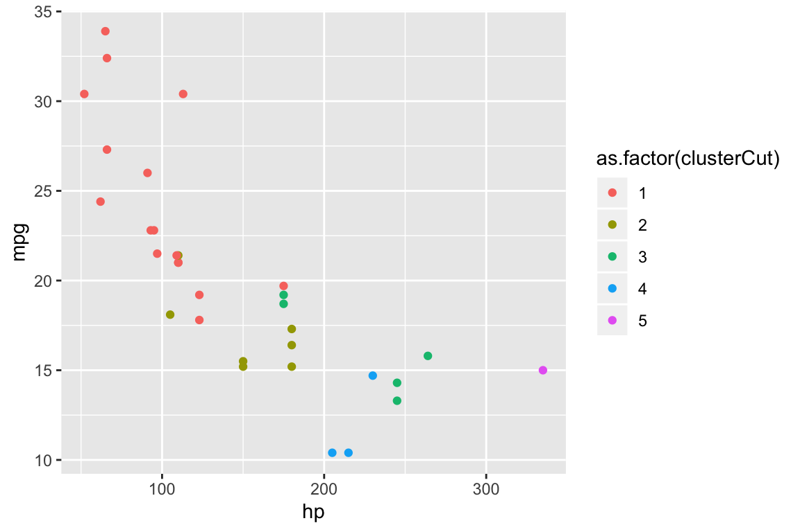
## Mazda RX4 Mazda RX4 Wag Datsun 710 Hornet 4 Drive
## 1 1 2 3
## Hornet Sportabout Valiant Duster 360 Merc 240D
## 4 5 6 7
## Merc 230 Merc 280 Merc 280C Merc 450SE
## 8 9 9 10
## Merc 450SL Merc 450SLC Cadillac Fleetwood Lincoln Continental
## 10 10 11 12
## Chrysler Imperial Fiat 128 Honda Civic Toyota Corolla
## 13 14 15 16
## Toyota Corona Dodge Challenger AMC Javelin Camaro Z28
## 17 18 19 20
## Pontiac Firebird Fiat X1-9 Porsche 914-2 Lotus Europa
## 21 22 23 24
## Ford Pantera L Ferrari Dino Maserati Bora Volvo 142E
## 25 26 27 28

Hierarchical clustering: summary - 可快速瀏覽觀察值與各欄位的關係
- 分群結果可能被以下參數影響：
- 計算距離的方法
- 分群依據
- 更改數值的大小
- 可能會遇到的問題：
- 有時會不太清楚要如何切割分群結果
10.4.2 K-means clustering
- 執行步驟
- 指定要分幾群
- 計算每一群的中心點
- 將各個物件/觀察值指定給最近的中心點
- 依照新的分群計算新的中心點
- 輸入
- 計算距離的資料（數值）
- 要分成幾群 # of clusters
- 預設個群的中間點位置
- 產出
- 計算出每’群‘的中心點
- 指定每個觀察值所在的’群‘
x<-scale(mtcars$hp[-1]);y<-scale(mtcars$mpg[-1])
plot(x,y,col="blue",pch=19,cex=2)
text(x+0.05,y+0.05,labels=labelCar)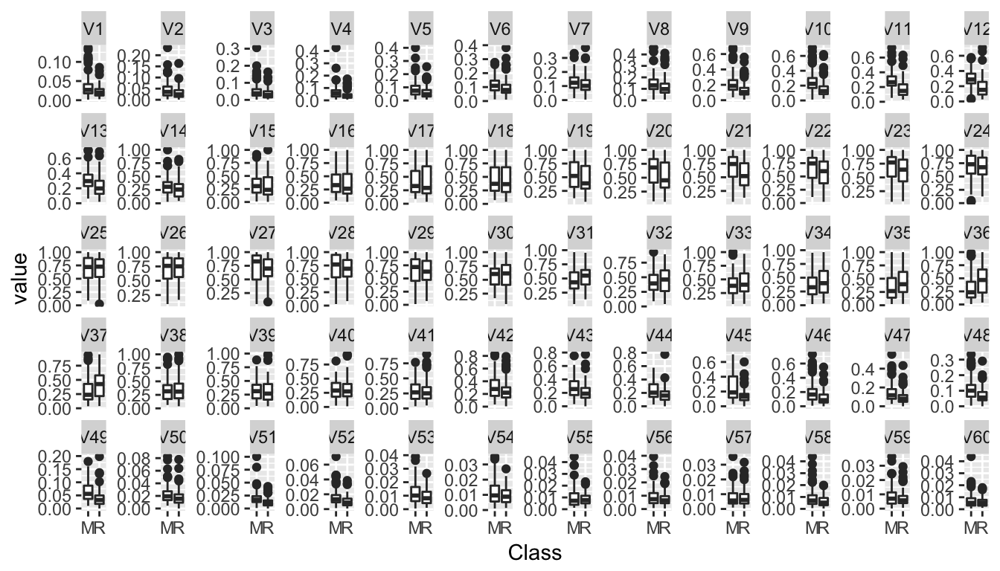
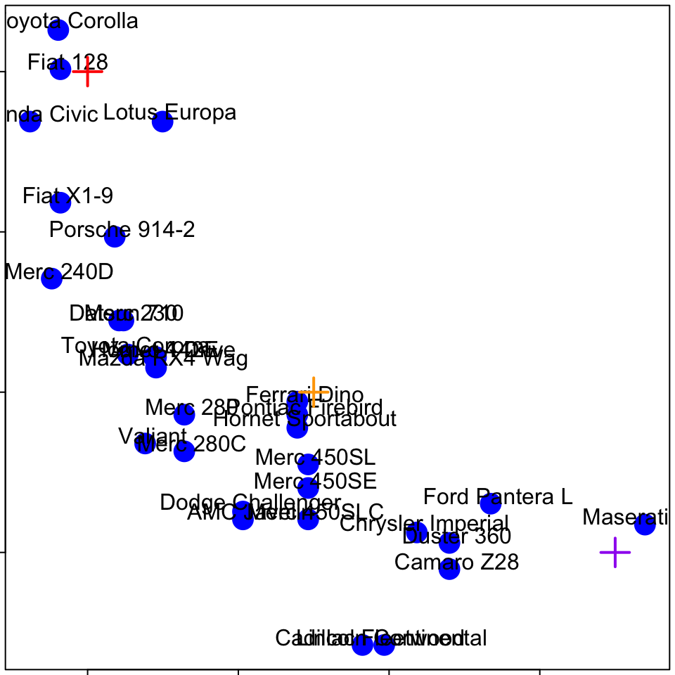
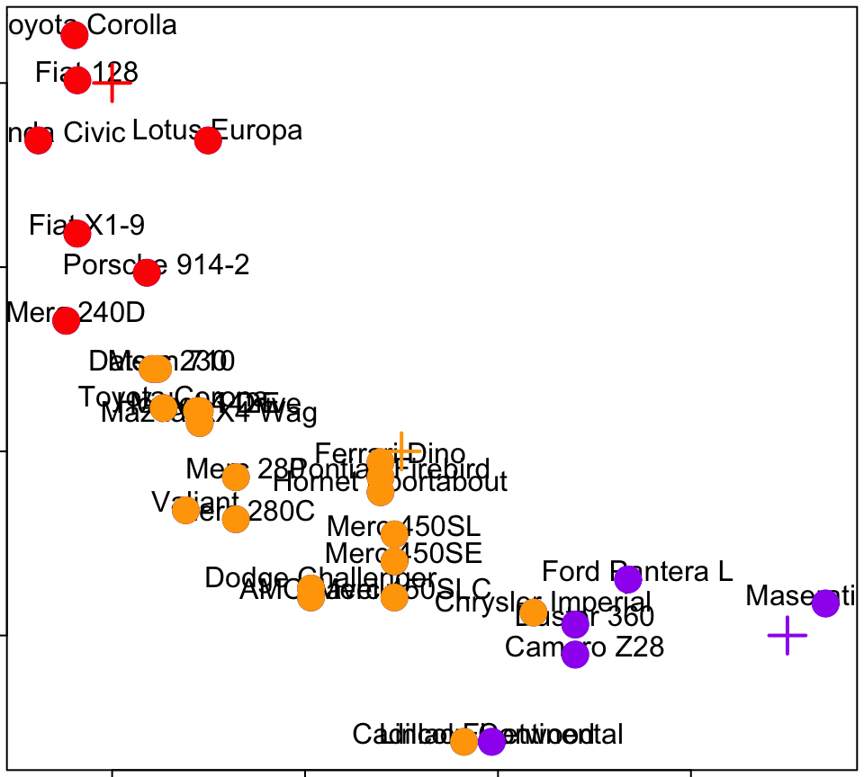
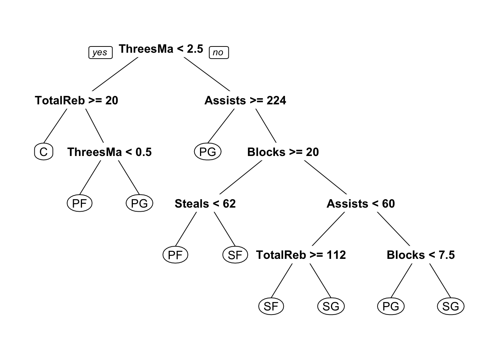
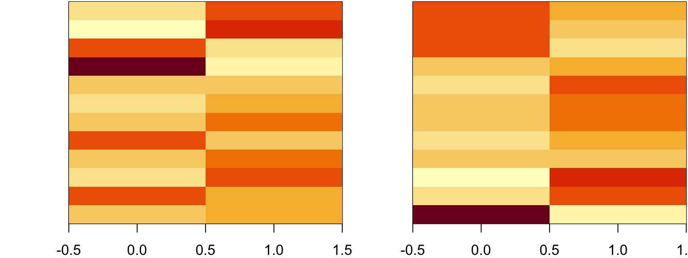

kmeans()
- Important parameters:
x,centers,iter.max,nstart
## [1] "cluster" "centers" "totss" "withinss" "tot.withinss"
## [6] "betweenss" "size" "iter" "ifault"## [1] 2 3 2 2 2 1 3 3 2 2 2 2 2 1 1 1 3 3 3 2 2 2 1 2 3 3 3 1 2 1 2par(mar=rep(0.2,4))
plot(x,y,col=kmeansObj$cluster,pch=19,cex=2)
points(kmeansObj$centers,col=1:3,pch=3,cex=3,lwd=3)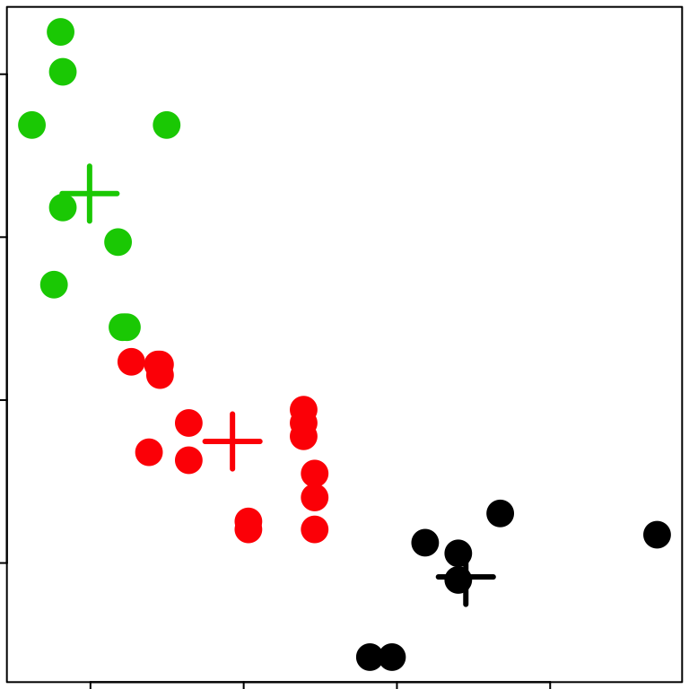
Heatmaps
set.seed(1234)
dataMatrix <- as.matrix(dataFrame)[sample(1:12),]
kmeansObj <- kmeans(dataMatrix,centers=3)
par(mfrow=c(1,2), mar = c(2, 4, 0.1, 0.1))
image(t(dataMatrix)[,nrow(dataMatrix):1],yaxt="n")
image(t(dataMatrix)[,order(kmeansObj$cluster)],yaxt="n")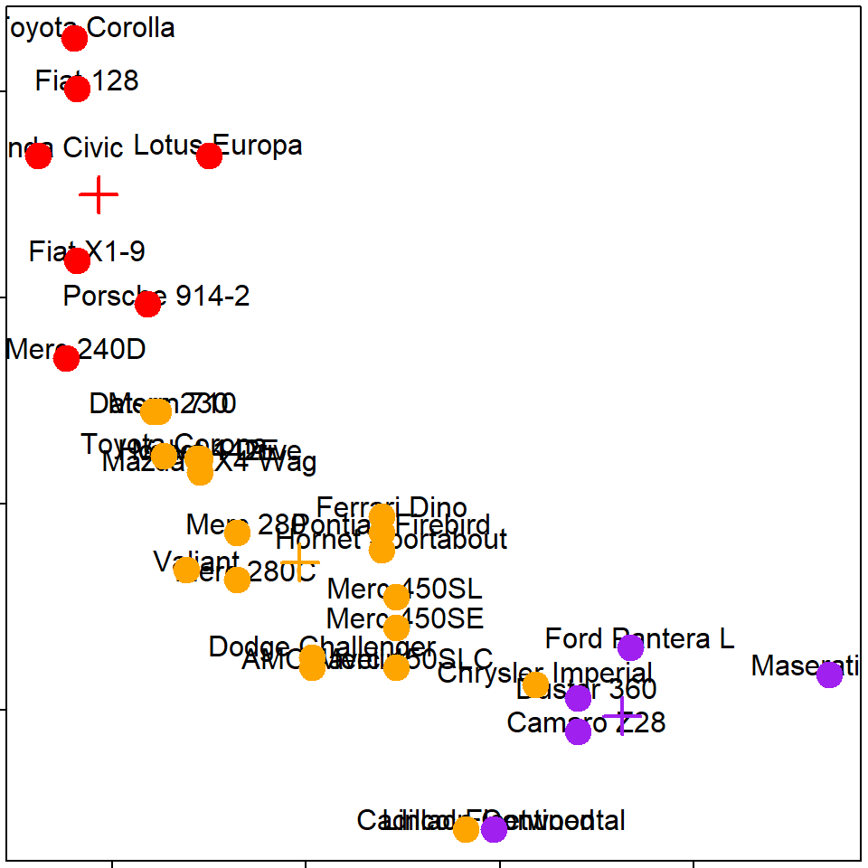
K-means注意事項
- 需要決定# of clusters
- 用眼睛/人工/特殊要求選
- 用 cross validation/information theory選
- Determining the number of clusters
- K-means 沒有一定的結果
- 不同的 # of clusters
- 不同的 # of iterations
kmeans(), k=2
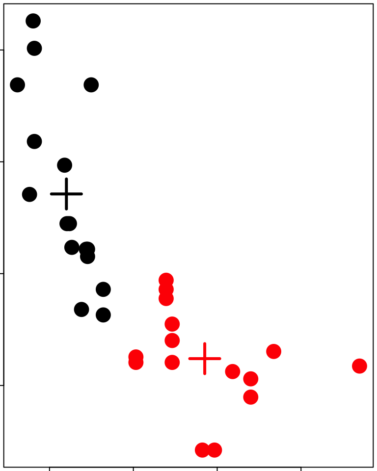
kmeans(), k=3

kmeans(), k=4
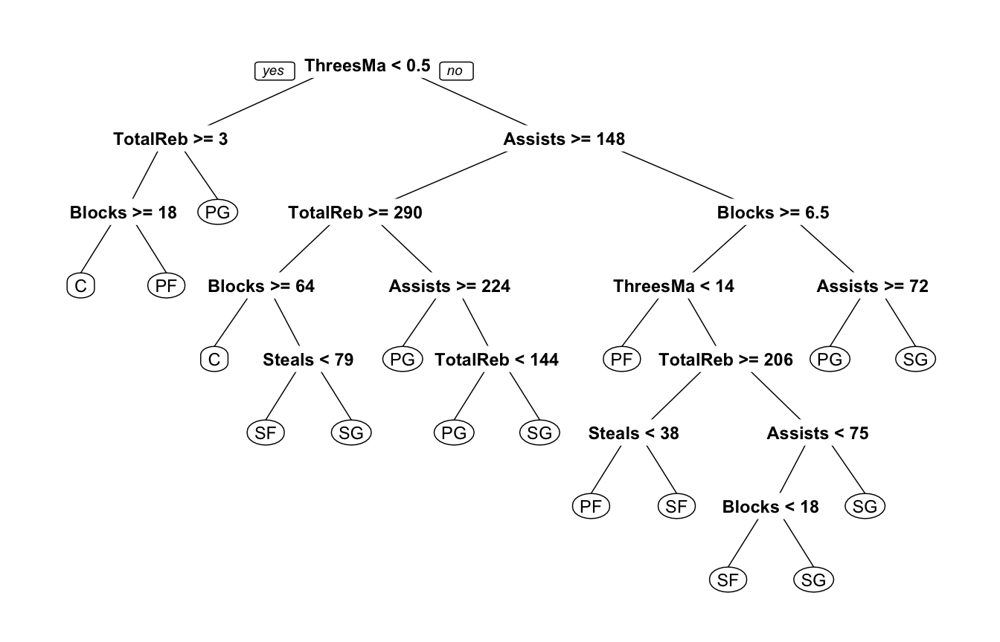
10.5 Association Rules 關聯式規則
關聯式規則用於從大量數據中挖掘出有價值的數據項之間的相關關係，原則為不考慮項目的次序，而僅考慮其組合。著名的購物籃分析 (Market Basket Analysis)即為關聯式規則分析的應用。而Apriori演算法是挖掘布林關聯規則 (Boolean association rules) 頻繁項集的算法，在R中，可以使用arules(Hahsler et al. 2019) 套件來執行關聯式規則分析。
以下以超市資料為例，使用關聯式規則分析執行購物籃分析。
首先先讀入超市消費資料
# Load the libraries
if (!require('arules')){
install.packages("arules");
library(arules) #for Apriori演算法
}
if (!require('datasets')){
install.packages("datasets");
library(datasets) #for Groceries data
}
data(Groceries) # Load the data set
Groceries@data@Dim #169 種商品，9835筆交易資料## [1] 169 9835超市資料的原始樣貌為： 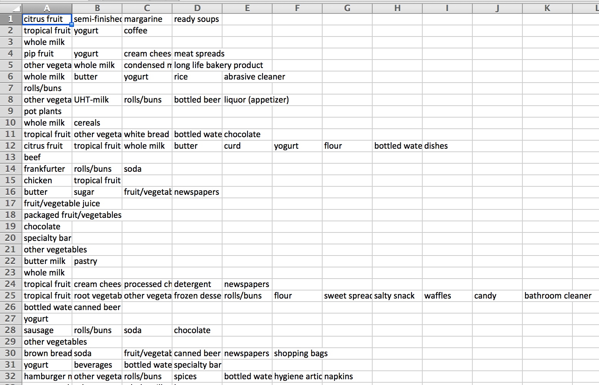
可使用arules套件中的apriori函數來實作apriori演算法
# Get the rules
rules <- apriori(Groceries, # data= Groceries
parameter = list(supp = 0.001, conf = 0.8), #參數最低限度
control = list(verbose=F)) #不要顯示output
options(digits=2) # Only 2 digits
inspect(rules[1:5]) # Show the top 5 rules## lhs rhs support confidence lift count
## [1] {liquor,red/blush wine} => {bottled beer} 0.0019 0.90 11.2 19
## [2] {curd,cereals} => {whole milk} 0.0010 0.91 3.6 10
## [3] {yogurt,cereals} => {whole milk} 0.0017 0.81 3.2 17
## [4] {butter,jam} => {whole milk} 0.0010 0.83 3.3 10
## [5] {soups,bottled beer} => {whole milk} 0.0011 0.92 3.6 11根據計算結果，解讀模型的方法如下：
啤酒=>尿布
Support: 一次交易中，包括規則內的物品的機率。買啤酒同時買尿布的機率。交集Confidence: 包含左邊物品A的交易也會包含右邊物品B的條件機率。在買了啤酒的顧客中，有買尿布的比例。Lift: 規則的信心比期望值高多少。（買了啤酒以後，有買尿布的機率）/（在所有顧客群中買尿布的機率）lift=1: items on the left and right are independent.
可用排序功能排序後，列出最有關連（confidence最高）的幾條規則
rules<-sort(rules, by="confidence", decreasing=TRUE) #按照confidence排序
inspect(rules[1:5]) # Show the top 5 rules## lhs rhs support confidence lift count
## [1] {rice,
## sugar} => {whole milk} 0.0012 1 3.9 12
## [2] {canned fish,
## hygiene articles} => {whole milk} 0.0011 1 3.9 11
## [3] {root vegetables,
## butter,
## rice} => {whole milk} 0.0010 1 3.9 10
## [4] {root vegetables,
## whipped/sour cream,
## flour} => {whole milk} 0.0017 1 3.9 17
## [5] {butter,
## soft cheese,
## domestic eggs} => {whole milk} 0.0010 1 3.9 10特別針對某項商品（右側變數），像是：買了什麼東西的人，會買牛奶呢？
rulesR<-apriori(data=Groceries, parameter=list(supp=0.001,conf = 0.08),
appearance = list(default="lhs",rhs="whole milk"), #設定右邊一定要是牛奶
control = list(verbose=F)) #不要顯示output
rulesR<-sort(rulesR, decreasing=TRUE,by="confidence") #按照confidence排序
inspect(rulesR[1:5]) # Show the top 5 rules## lhs rhs support confidence lift count
## [1] {rice,
## sugar} => {whole milk} 0.0012 1 3.9 12
## [2] {canned fish,
## hygiene articles} => {whole milk} 0.0011 1 3.9 11
## [3] {root vegetables,
## butter,
## rice} => {whole milk} 0.0010 1 3.9 10
## [4] {root vegetables,
## whipped/sour cream,
## flour} => {whole milk} 0.0017 1 3.9 17
## [5] {butter,
## soft cheese,
## domestic eggs} => {whole milk} 0.0010 1 3.9 10特別針對某項商品（左側變數），像是：買了牛奶的人，會買什麼呢？
rulesL<-apriori(data=Groceries, parameter=list(supp=0.001,conf = 0.15,minlen=2),
appearance = list(default="rhs",lhs="whole milk"), #設定左邊一定要是牛奶
control = list(verbose=F)) #不要顯示output
rulesL<-sort(rulesL, decreasing=TRUE,by="confidence") #按照confidence排序
inspect(rulesL[1:5]) # Show the top 5 rules## lhs rhs support confidence lift count
## [1] {whole milk} => {other vegetables} 0.075 0.29 1.5 736
## [2] {whole milk} => {rolls/buns} 0.057 0.22 1.2 557
## [3] {whole milk} => {yogurt} 0.056 0.22 1.6 551
## [4] {whole milk} => {root vegetables} 0.049 0.19 1.8 481
## [5] {whole milk} => {tropical fruit} 0.042 0.17 1.6 416規則視覺化
if (!require('arulesViz')){
install.packages("arulesViz");
library(arulesViz)
}
#Mac->http://planspace.org/2013/01/17/fix-r-tcltk-dependency-problem-on-mac/
plot(rules,method="graph",interactive=TRUE,shading=NA) #會跑一陣子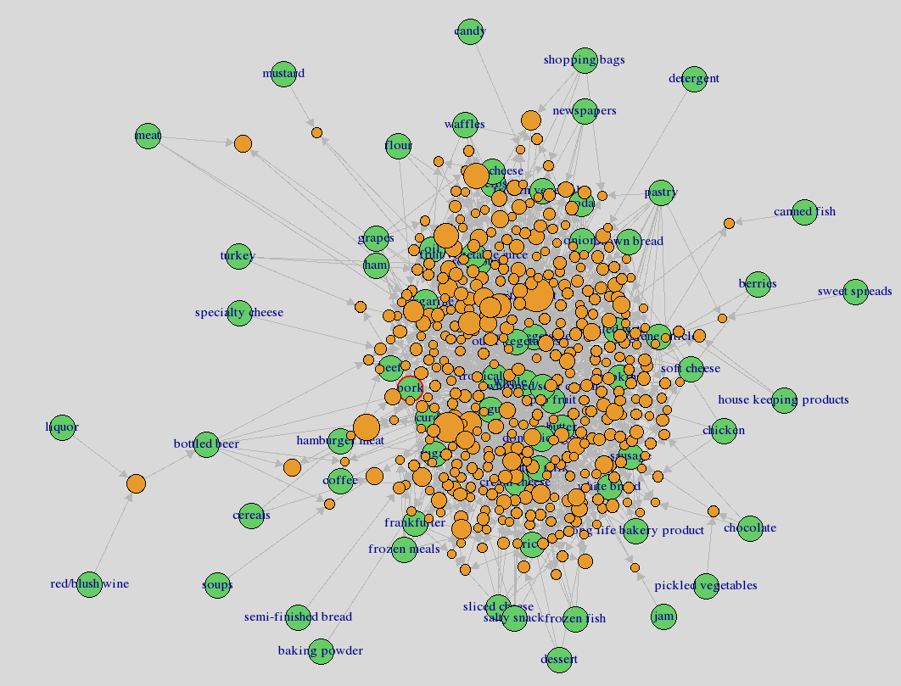 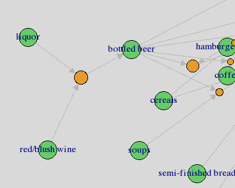
10.6 Open Source Packages
10.6.1 Prophet
Prophet 是 Facebook在2017年開放出來的時序性預測演算法，用來預測各類資料的時序變化，像是顧客造訪數、溫度、疾病發生率等等，以下是Prophet for R的安裝使用範例
- C/C++ Tool
- R Tools on Windows
- Command Line Tools on OS X
library(prophet)
library(dplyr)
df <- read.csv('https://raw.githubusercontent.com/facebookincubator/prophet/master/examples/example_wp_peyton_manning.csv') %>%
mutate(y = log(y))
m <- prophet(df)
future <- make_future_dataframe(m, periods = 365)
tail(future)
forecast <- predict(m, future)
tail(forecast[c('ds', 'yhat', 'yhat_lower', 'yhat_upper')])
plot(m, forecast)
prophet_plot_components(m, forecast)10.6.2 TensorFlow
- Python 3.5.3 64 bit 網站
- Windows x86-64 executable installer
- TensorFlow 1.0.1 網站
- pip3 install –upgrade tensorflow
- pip3 install –upgrade tensorflow-gpu
- C/C++ Tool
- R Tools on Windows
- Command Line Tools on OS X
- tensorflow package for R 網站
TensorFlow for R
- Locating TensorFlow (optional)
- Hello World
10.7 模型驗證
在完成模型訓練後，為了驗證模型訓練的好不好，需要用一組獨立的測試資料，來做模型的驗證。所以，在訓練模型前，必須特別留意是否有保留一份獨立的資料，並確保在訓練模型時都不用到此獨立資料集。因此，資料集可分為以下兩種：
- 訓練組 Training set, Development set: 讓演算法
學到知識 - 測試組 Test set, Validation set: 驗證
學的怎麼樣
Training set和Test set通常會比例分配，如2/3的資料設為Training set，剩下的1/3做驗證Test set。以下圖的監督式學習流程圖為例，可以注意到綠色箭頭的資料集在訓練過程中從未被使用。

10.7.1 Regression 迴歸驗證
以NBA資料為例，首先先將資料讀入
#讀入SportsAnalytics package
if (!require('SportsAnalytics')){
install.packages("SportsAnalytics")
library(SportsAnalytics)
}
#擷取2015-2016年球季球員資料
NBA1516<-fetch_NBAPlayerStatistics("15-16")
NBA1516<-NBA1516[complete.cases(NBA1516),]- 以Training set來
選看起來最好的模型 - 用Test set來
驗證模型是不是真的很好 - 想像…..訓練出來題庫答得好的學生，寫到新題目不一定會寫！？
- 訓練模型時，只能看Training set，用Training set來選一個最好的模型
- 訓練模型時，不能偷看Test set，才是真正的驗證
為分出訓練組與測試組，需使用隨機抽樣的方式
## [1] 3 8 5## [1] 435 395 22 216 125 144 238 85 355 94 121 461 374 256 298 470 286 152
## [19] 230 309 221 111 347 34 140 323 227 69 226 455 335 78 376 383 19 451
## [37] 7 105 456 135 222 23 245 53 385 439 336 39 475 164 30 136 283 391
## [55] 199 60 229 83 375 163 130 67 371 448 413 55 54 43 209 122 11 126
## [73] 300 15 449 113 82 409 415 62 52 172 16 280 40 411 48 86 354 366
## [91] 108 389 306 285 349 378 358 184 107 95 189 186 119 379 236 384 157 337
## [109] 394 333 219 457 316 182 356 117 173 128 225 265 201 348 204 155 81 29
## [127] 297 399 343 407 345 397 191 147 197 148 77 350 215 145 25 269 109 252
## [145] 194 234 141 400 249 139 183 38 98 352 454 193 445 305使用上述方法，選出1/3的元素位置，把NBA的資料分成Training 和 Test set
NBA1516$Test<-F #新增一個參數紀錄分組
#隨機取1/3當Test set
NBA1516[sample(1:nrow(NBA1516),nrow(NBA1516)/3),]$Test<-T
# Training set : Test set球員數
c(sum(NBA1516$Test==F),sum(NBA1516$Test==T))## [1] 317 158並用訓練組的資料（NBA1516$Test==F），訓練一個多變數線性迴歸模型
fit<-glm(TotalPoints~TotalMinutesPlayed+FieldGoalsAttempted+
Position+ThreesAttempted+FreeThrowsAttempted,
data =NBA1516[NBA1516$Test==F,])
summary(fit)$coefficients## Estimate Std. Error t value Pr(>|t|)
## (Intercept) 14.6138 8.5471 1.7 8.8e-02
## TotalMinutesPlayed 0.0037 0.0074 0.5 6.2e-01
## FieldGoalsAttempted 1.0066 0.0229 44.0 9.0e-135
## PositionPF -24.6204 9.0380 -2.7 6.8e-03
## PositionPG -44.5870 9.5232 -4.7 4.3e-06
## PositionSF -13.3311 9.6856 -1.4 1.7e-01
## PositionSG -34.8667 9.7711 -3.6 4.2e-04
## ThreesAttempted 0.0968 0.0310 3.1 2.0e-03
## FreeThrowsAttempted 0.6890 0.0388 17.8 3.8e-49逐步選擇模型 stepwise 後退學習：一開始先將所有參數加到模型裡，再一個一個拿掉
library(MASS)
##根據AIC，做逐步選擇, 預設倒退學習 direction = "backward"
##trace=FALSE: 不要顯示步驟
finalModel_B<-stepAIC(fit,direction = "backward",trace=FALSE)
summary(finalModel_B)$coefficients## Estimate Std. Error t value Pr(>|t|)
## (Intercept) 16.034 8.052 2.0 4.7e-02
## FieldGoalsAttempted 1.014 0.018 57.9 6.1e-168
## PositionPF -24.934 9.005 -2.8 6.0e-03
## PositionPG -45.141 9.447 -4.8 2.7e-06
## PositionSF -13.516 9.667 -1.4 1.6e-01
## PositionSG -35.176 9.740 -3.6 3.5e-04
## ThreesAttempted 0.098 0.031 3.2 1.6e-03
## FreeThrowsAttempted 0.690 0.039 17.8 2.4e-49逐步選擇模型 stepwise 往前學習：一開始先做一個沒有參數的模型，再把參數一個一個加進去
##根據AIC，做逐步選擇, 往前學習 direction = "forward"
finalModel_F<-stepAIC(fit,direction = "forward",trace=FALSE)
summary(finalModel_F)$coefficients## Estimate Std. Error t value Pr(>|t|)
## (Intercept) 14.6138 8.5471 1.7 8.8e-02
## TotalMinutesPlayed 0.0037 0.0074 0.5 6.2e-01
## FieldGoalsAttempted 1.0066 0.0229 44.0 9.0e-135
## PositionPF -24.6204 9.0380 -2.7 6.8e-03
## PositionPG -44.5870 9.5232 -4.7 4.3e-06
## PositionSF -13.3311 9.6856 -1.4 1.7e-01
## PositionSG -34.8667 9.7711 -3.6 4.2e-04
## ThreesAttempted 0.0968 0.0310 3.1 2.0e-03
## FreeThrowsAttempted 0.6890 0.0388 17.8 3.8e-49逐步選擇模型 stepwise 雙向學習：參數加加減減
##根據AIC，做逐步選擇, 雙向學習 direction = "both"
finalModel_Both<-stepAIC(fit,direction = "both",trace=FALSE)
summary(finalModel_Both)$coefficients## Estimate Std. Error t value Pr(>|t|)
## (Intercept) 16.034 8.052 2.0 4.7e-02
## FieldGoalsAttempted 1.014 0.018 57.9 6.1e-168
## PositionPF -24.934 9.005 -2.8 6.0e-03
## PositionPG -45.141 9.447 -4.8 2.7e-06
## PositionSF -13.516 9.667 -1.4 1.6e-01
## PositionSG -35.176 9.740 -3.6 3.5e-04
## ThreesAttempted 0.098 0.031 3.2 1.6e-03
## FreeThrowsAttempted 0.690 0.039 17.8 2.4e-49用Test set來評估模型好不好，使用predict函數，將測試組資料放入預測模型中，預測測試組的結果
predictPoint<-predict(finalModel_Both, #Test==T, test data
newdata = NBA1516[NBA1516$Test==T,])
cor(x=predictPoint,y=NBA1516[NBA1516$Test==T,]$TotalPoints) #相關係數## [1] 0.99
10.7.2 Logistic Regression 邏輯迴歸驗證
首先，先把入學資料分成Training 和 Test set。這邊要特別留意，當答案有正反兩面時，Level 1 要放正面答案–>有病/錄取…
mydata <- read.csv("https://raw.githubusercontent.com/CGUIM-BigDataAnalysis/BigDataCGUIM/master/binary.csv")
mydata$admit <- factor(mydata$admit) # 類別變項要轉為factor
mydata$rank <- factor(mydata$rank) # 類別變項要轉為factor
mydata$Test<-F #新增一個參數紀錄分組
mydata[sample(1:nrow(mydata),nrow(mydata)/3),"Test"]<-T #隨機取1/3當Test set
c(sum(mydata$Test==F),sum(mydata$Test==T)) # Training set : Test set學生數## [1] 267 133#修改一下factor的level: 改成Level 1為錄取，2為不錄取-->Level 1 要放正面答案
mydata$admit<-factor(mydata$admit,levels=c(1,0))逐步選擇最好的模型
# GRE:某考試成績, GPA:在校平均成績, rank:學校聲望
mylogit <- glm(admit ~ gre + gpa + rank,
data = mydata[mydata$Test==F,], family = "binomial")
finalFit<-stepAIC(mylogit,direction = "both",trace=FALSE) # 雙向逐步選擇模型
summary(finalFit)##
## Call:
## glm(formula = admit ~ gre + rank, family = "binomial", data = mydata[mydata$Test ==
## F, ])
##
## Deviance Residuals:
## Min 1Q Median 3Q Max
## -2.149 -1.085 0.613 0.855 1.537
##
## Coefficients:
## Estimate Std. Error z value Pr(>|z|)
## (Intercept) 2.06544 0.79793 2.59 0.00964 **
## gre -0.00400 0.00124 -3.24 0.00121 **
## rank2 0.91208 0.39550 2.31 0.02110 *
## rank3 1.67005 0.43595 3.83 0.00013 ***
## rank4 1.73871 0.48597 3.58 0.00035 ***
## ---
## Signif. codes: 0 '***' 0.001 '**' 0.01 '*' 0.05 '.' 0.1 ' ' 1
##
## (Dispersion parameter for binomial family taken to be 1)
##
## Null deviance: 332.54 on 266 degrees of freedom
## Residual deviance: 299.33 on 262 degrees of freedom
## AIC: 309.3
##
## Number of Fisher Scoring iterations: 4用預測組預測新學生可不可以錄取，並驗證答案
AdmitProb<-predict(finalFit, # 用Training set做的模型
newdata = mydata[mydata$Test==T,], #Test==T, test data
type="response") #結果為每個人被錄取的機率
head(AdmitProb)## 4 13 14 15 20 23
## 0.78 0.27 0.54 0.32 0.48 0.80##
## 1 0
## FALSE 33 80
## TRUE 10 10當答案是二元時：效能指標
- Sensitivity 敏感性
- Specificity 特異性
- Positive Predictive Value (PPV) 陽性預測值
- Negative Predictive Value (NPV) 陰性預測值
名詞解釋
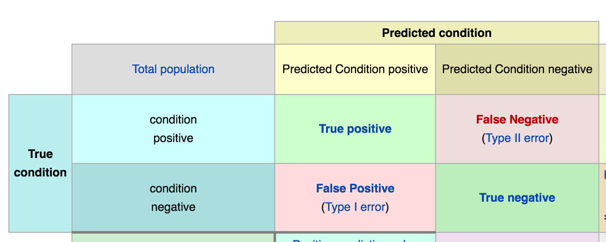
- TP: 有病且預測也有病
- TN: 沒病且預測也沒病
- FP: 沒病但是預測有病
- FN: 有病但預測沒病
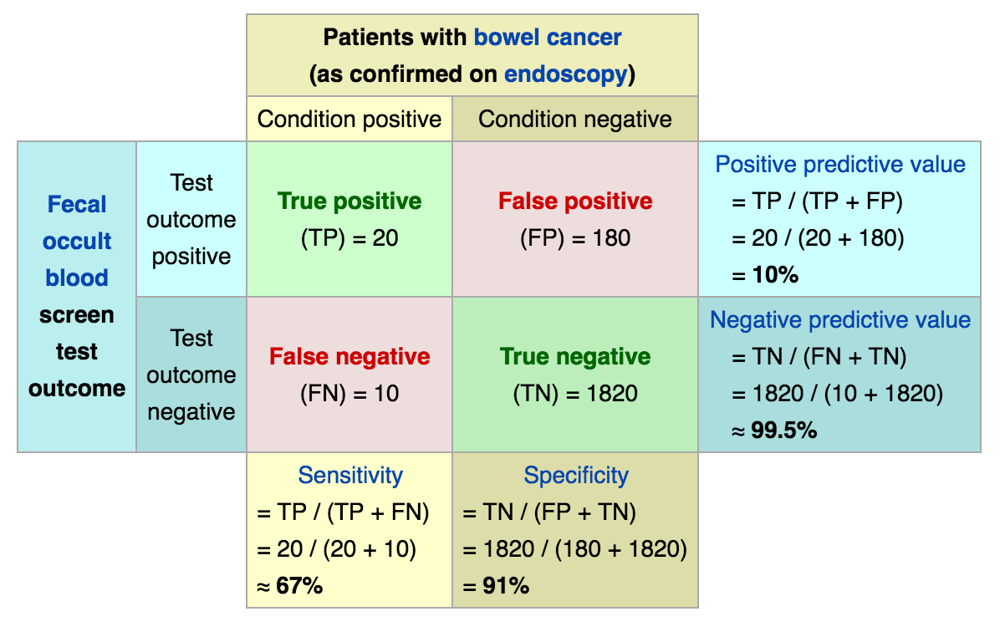
當答案是二元時：效能指標公式
- Sensitivity 敏感性：所有
真的有病的人，被預測有病的比例 - Specificity 特異性：所有
真的沒病的人，被預測沒病的比例 - Positive Predictive Value (PPV) 陽性預測值：所有被
預測有病的人，真的有病的比例 - Negative Predictive Value (NPV) 陰性預測值：所有被
預測沒病的人，真的沒病的比例
回想一下剛剛的驗證結果
##
## 1 0
## FALSE 33 80
## TRUE 10 10計算預測效能參數
AdmitProb<-predict(finalFit,
newdata = mydata[mydata$Test==T,], #Test==T, test data
type="response") #結果為每個人『不』被錄取的機率
AdmitAns<-factor(ifelse(AdmitProb<0.5,1,0),levels=c(1,0))
str(AdmitAns)## Factor w/ 2 levels "1","0": 2 1 2 1 1 2 2 1 2 2 ...
## - attr(*, "names")= chr [1:133] "4" "13" "14" "15" ...計算預測效能參數
library(caret) # install.packages("caret") #計算參數的packages
sensitivity(AdmitAns,mydata[mydata$Test==T,]$admit)## [1] 0.23## [1] 0.89## [1] 0.5## [1] 0.7110.7.3 Decision Trees 決策樹驗證
阻攻/籃板/三分/助攻/抄截判斷位置-訓練
if (!require('rpart')){
install.packages("rpart"); library(rpart)
}
DT<-rpart(Position~Blocks+TotalRebounds+ThreesMade+Assists+Steals,
data=NBA1516[NBA1516$Test==F,]) #訓練組 Training set
#控球後衛（PG）、得分後衛（SG）、小前鋒（SF）、大前鋒（PF）和中鋒（C）
DT## n= 317
##
## node), split, n, loss, yval, (yprob)
## * denotes terminal node
##
## 1) root 317 240 SG (0.13 0.22 0.22 0.2 0.24)
## 2) Assists< 2.3e+02 272 200 SG (0.15 0.25 0.14 0.2 0.26)
## 4) ThreesMade< 2.5 82 51 C (0.38 0.34 0.13 0.085 0.061)
## 8) TotalRebounds>=10 61 31 C (0.49 0.41 0.049 0.016 0.033)
## 16) TotalRebounds>=4.7e+02 18 3 C (0.83 0.17 0 0 0) *
## 17) TotalRebounds< 4.7e+02 43 21 PF (0.35 0.51 0.07 0.023 0.047)
## 34) Steals>=10 19 6 PF (0.26 0.68 0.053 0 0) *
## 35) Steals< 10 24 14 C (0.42 0.38 0.083 0.042 0.083)
## 70) TotalRebounds>=20 16 7 C (0.56 0.25 0.062 0.062 0.062) *
## 71) TotalRebounds< 20 8 3 PF (0.12 0.62 0.12 0 0.12) *
## 9) TotalRebounds< 10 21 13 PG (0.048 0.14 0.38 0.29 0.14)
## 18) Steals>=0.5 13 5 PG (0.077 0.077 0.62 0.15 0.077) *
## 19) Steals< 0.5 8 4 SF (0 0.25 0 0.5 0.25) *
## 5) ThreesMade>=2.5 190 120 SG (0.047 0.22 0.14 0.25 0.35)
## 10) TotalRebounds>=2.9e+02 44 23 PF (0.11 0.48 0.023 0.32 0.068)
## 20) Steals< 60 24 5 PF (0.083 0.79 0 0.12 0) *
## 21) Steals>=60 20 9 SF (0.15 0.1 0.05 0.55 0.15) *
## 11) TotalRebounds< 2.9e+02 146 82 SG (0.027 0.14 0.17 0.23 0.44)
## 22) Assists< 82 87 53 SG (0.023 0.22 0.057 0.31 0.39)
## 44) Blocks>=6.5 49 31 PF (0.02 0.37 0.02 0.29 0.31)
## 88) Assists< 40 16 5 PF (0.062 0.69 0 0.19 0.062) *
## 89) Assists>=40 33 19 SG (0 0.21 0.03 0.33 0.42)
## 178) Blocks< 18 17 8 SF (0 0.18 0.059 0.53 0.24) *
## 179) Blocks>=18 16 6 SG (0 0.25 0 0.12 0.62) *
## 45) Blocks< 6.5 38 19 SG (0.026 0.026 0.11 0.34 0.5)
## 90) Blocks< 2.5 22 9 SG (0.045 0.045 0.14 0.18 0.59) *
## 91) Blocks>=2.5 16 7 SF (0 0 0.062 0.56 0.38) *
## 23) Assists>=82 59 29 SG (0.034 0.017 0.34 0.1 0.51)
## 46) TotalRebounds< 1.4e+02 22 5 PG (0 0 0.77 0 0.23) *
## 47) TotalRebounds>=1.4e+02 37 12 SG (0.054 0.027 0.081 0.16 0.68) *
## 3) Assists>=2.3e+02 45 13 PG (0 0.044 0.71 0.18 0.067)
## 6) TotalRebounds< 5e+02 36 5 PG (0 0 0.86 0.056 0.083) *
## 7) TotalRebounds>=5e+02 9 3 SF (0 0.22 0.11 0.67 0) *阻攻/籃板/三分/助攻/抄截判斷位置-訓練
預設的plot()真的太難用，改用rpart.plot package的prp()
if (!require('rpart.plot')){
install.packages("rpart.plot");
library(rpart.plot)
}
prp(DT) # 把決策樹畫出來
阻攻/籃板/三分/助攻/抄截判斷位置-訓練

有批球員沒寫守備位置？–預測
posPred<-predict(DT,newdata= NBA1516[NBA1516$Test==T,]) #Test==T, test data
# 預設為class probabilities, type = "prob"
head(posPred)## C PF PG SF SG
## 1 0.083 0.792 0.000 0.12 0.00
## 2 0.054 0.027 0.081 0.16 0.68
## 8 0.045 0.045 0.136 0.18 0.59
## 13 0.000 0.222 0.111 0.67 0.00
## 17 0.150 0.100 0.050 0.55 0.15
## 18 0.263 0.684 0.053 0.00 0.00有個人沒寫守備位置–對答案
result<-cbind(round(posPred,digits = 2),
NBA1516[NBA1516$Test==T,]$Name,
as.character(NBA1516[NBA1516$Test==T,]$Position))
head(result)## C PF PG SF SG
## 1 "0.08" "0.79" "0" "0.12" "0" "Chris Bosh" "PF"
## 2 "0.05" "0.03" "0.08" "0.16" "0.68" "Danilo Gallinari" "SF"
## 8 "0.05" "0.05" "0.14" "0.18" "0.59" "Justin Harper" "PF"
## 13 "0" "0.22" "0.11" "0.67" "0" "Paul George" "SF"
## 17 "0.15" "0.1" "0.05" "0.55" "0.15" "Langsto Galloway" "PG"
## 18 "0.26" "0.68" "0.05" "0" "0" "Kendrick Perkins" "C"有個人沒寫守備位置–預測-2
posPredC<-predict(DT,newdata= NBA1516[NBA1516$Test==T,],type = "class")
# type = "class" 直接預測類別
head(posPredC)## 1 2 8 13 17 18
## PF SG SG SF SF PF
## Levels: C PF PG SF SG有個人沒寫守備位置–對答案-2
resultC<-cbind(as.character(posPredC),NBA1516[NBA1516$Test==T,]$Name,
as.character(NBA1516[NBA1516$Test==T,]$Position))
head(resultC)## [,1] [,2] [,3]
## [1,] "PF" "Chris Bosh" "PF"
## [2,] "SG" "Danilo Gallinari" "SF"
## [3,] "SG" "Justin Harper" "PF"
## [4,] "SF" "Paul George" "SF"
## [5,] "SF" "Langsto Galloway" "PG"
## [6,] "PF" "Kendrick Perkins" "C"10.8 Case Study
完整的模型建立步驟範例：
- 標題：以聲波撞擊礦石的回聲預測礦石是否為礦物
- 以Sonar, Mines vs. Rocks為例
步驟1.1:讀資料
#install.packages("mlbench") # 此package內有很多dataset可練習
library(mlbench)
data(Sonar)
str(Sonar) #看一下資料型別，有沒有缺值，類別變項是不是factor## 'data.frame': 208 obs. of 61 variables:
## $ V1 : num 0.02 0.0453 0.0262 0.01 0.0762 0.0286 0.0317 0.0519 0.0223 0.0164 ...
## $ V2 : num 0.0371 0.0523 0.0582 0.0171 0.0666 0.0453 0.0956 0.0548 0.0375 0.0173 ...
## $ V3 : num 0.0428 0.0843 0.1099 0.0623 0.0481 ...
## $ V4 : num 0.0207 0.0689 0.1083 0.0205 0.0394 ...
## $ V5 : num 0.0954 0.1183 0.0974 0.0205 0.059 ...
## $ V6 : num 0.0986 0.2583 0.228 0.0368 0.0649 ...
## $ V7 : num 0.154 0.216 0.243 0.11 0.121 ...
## $ V8 : num 0.16 0.348 0.377 0.128 0.247 ...
## $ V9 : num 0.3109 0.3337 0.5598 0.0598 0.3564 ...
## $ V10 : num 0.211 0.287 0.619 0.126 0.446 ...
## $ V11 : num 0.1609 0.4918 0.6333 0.0881 0.4152 ...
## $ V12 : num 0.158 0.655 0.706 0.199 0.395 ...
## $ V13 : num 0.2238 0.6919 0.5544 0.0184 0.4256 ...
## $ V14 : num 0.0645 0.7797 0.532 0.2261 0.4135 ...
## $ V15 : num 0.066 0.746 0.648 0.173 0.453 ...
## $ V16 : num 0.227 0.944 0.693 0.213 0.533 ...
## $ V17 : num 0.31 1 0.6759 0.0693 0.7306 ...
## $ V18 : num 0.3 0.887 0.755 0.228 0.619 ...
## $ V19 : num 0.508 0.802 0.893 0.406 0.203 ...
## $ V20 : num 0.48 0.782 0.862 0.397 0.464 ...
## $ V21 : num 0.578 0.521 0.797 0.274 0.415 ...
## $ V22 : num 0.507 0.405 0.674 0.369 0.429 ...
## $ V23 : num 0.433 0.396 0.429 0.556 0.573 ...
## $ V24 : num 0.555 0.391 0.365 0.485 0.54 ...
## $ V25 : num 0.671 0.325 0.533 0.314 0.316 ...
## $ V26 : num 0.641 0.32 0.241 0.533 0.229 ...
## $ V27 : num 0.71 0.327 0.507 0.526 0.7 ...
## $ V28 : num 0.808 0.277 0.853 0.252 1 ...
## $ V29 : num 0.679 0.442 0.604 0.209 0.726 ...
## $ V30 : num 0.386 0.203 0.851 0.356 0.472 ...
## $ V31 : num 0.131 0.379 0.851 0.626 0.51 ...
## $ V32 : num 0.26 0.295 0.504 0.734 0.546 ...
## $ V33 : num 0.512 0.198 0.186 0.612 0.288 ...
## $ V34 : num 0.7547 0.2341 0.2709 0.3497 0.0981 ...
## $ V35 : num 0.854 0.131 0.423 0.395 0.195 ...
## $ V36 : num 0.851 0.418 0.304 0.301 0.418 ...
## $ V37 : num 0.669 0.384 0.612 0.541 0.46 ...
## $ V38 : num 0.61 0.106 0.676 0.881 0.322 ...
## $ V39 : num 0.494 0.184 0.537 0.986 0.283 ...
## $ V40 : num 0.274 0.197 0.472 0.917 0.243 ...
## $ V41 : num 0.051 0.167 0.465 0.612 0.198 ...
## $ V42 : num 0.2834 0.0583 0.2587 0.5006 0.2444 ...
## $ V43 : num 0.282 0.14 0.213 0.321 0.185 ...
## $ V44 : num 0.4256 0.1628 0.2222 0.3202 0.0841 ...
## $ V45 : num 0.2641 0.0621 0.2111 0.4295 0.0692 ...
## $ V46 : num 0.1386 0.0203 0.0176 0.3654 0.0528 ...
## $ V47 : num 0.1051 0.053 0.1348 0.2655 0.0357 ...
## $ V48 : num 0.1343 0.0742 0.0744 0.1576 0.0085 ...
## $ V49 : num 0.0383 0.0409 0.013 0.0681 0.023 0.0264 0.0507 0.0285 0.0777 0.0092 ...
## $ V50 : num 0.0324 0.0061 0.0106 0.0294 0.0046 0.0081 0.0159 0.0178 0.0439 0.0198 ...
## $ V51 : num 0.0232 0.0125 0.0033 0.0241 0.0156 0.0104 0.0195 0.0052 0.0061 0.0118 ...
## $ V52 : num 0.0027 0.0084 0.0232 0.0121 0.0031 0.0045 0.0201 0.0081 0.0145 0.009 ...
## $ V53 : num 0.0065 0.0089 0.0166 0.0036 0.0054 0.0014 0.0248 0.012 0.0128 0.0223 ...
## $ V54 : num 0.0159 0.0048 0.0095 0.015 0.0105 0.0038 0.0131 0.0045 0.0145 0.0179 ...
## $ V55 : num 0.0072 0.0094 0.018 0.0085 0.011 0.0013 0.007 0.0121 0.0058 0.0084 ...
## $ V56 : num 0.0167 0.0191 0.0244 0.0073 0.0015 0.0089 0.0138 0.0097 0.0049 0.0068 ...
## $ V57 : num 0.018 0.014 0.0316 0.005 0.0072 0.0057 0.0092 0.0085 0.0065 0.0032 ...
## $ V58 : num 0.0084 0.0049 0.0164 0.0044 0.0048 0.0027 0.0143 0.0047 0.0093 0.0035 ...
## $ V59 : num 0.009 0.0052 0.0095 0.004 0.0107 0.0051 0.0036 0.0048 0.0059 0.0056 ...
## $ V60 : num 0.0032 0.0044 0.0078 0.0117 0.0094 0.0062 0.0103 0.0053 0.0022 0.004 ...
## $ Class: Factor w/ 2 levels "M","R": 2 2 2 2 2 2 2 2 2 2 ...在建立模型之前…別忘了基本的資料分析，使用探索性分析 Exploratory data analysis，看看資料長怎麼樣，要是有一個參數可以完美的把礦物跟石頭分開，那就不用麻煩建模了…
探索性分析 Exploratory data analysis
library(ggplot2);library(reshape2) #install.packages(c("ggplot2","reshape2"))
Sonar.m<-melt(Sonar,id.vars = c("Class"))
ggplot(Sonar.m)+geom_boxplot(aes(x=Class,y=value))+
facet_wrap(~variable, nrow=5,scales = "free_y") #圖片太小了
步驟1.2: 資料前處理
- 缺值？
- 沒有缺值，不需要處理
- 答案種類？
- 類別變項叫
Class，M: mine礦–>+, R: rock–>-，不需要處理
- 類別變項叫
- 類別變項的型別是不是factor？
- 是，不需要處理
- 有沒有無關的參數？
- 沒有無關的參數，不需要處理
步驟2:分成訓練組與測試組
該怎麼分可以自己決定，1/3，1/5…都可以
Sonar$Test<-F #新增一個參數紀錄分組
#隨機取1/3當Test set
Sonar[sample(1:nrow(Sonar),nrow(Sonar)/3),]$Test<-T
# 看一下 Training set : Test set 案例數
c(sum(Sonar$Test==F),sum(Sonar$Test==T))## [1] 139 69步驟3:訓練模型
- 注意只能用
訓練組的資料，Test參數==F，忘記可以看前面範例 - 數值自變項X很多，先用迴歸好了～
- 要解釋一下模型
fit<-glm(Class~., Sonar[Sonar$Test==F,],family="binomial")
finalFit<-stepAIC(fit,direction = "both",trace = F)
summary(finalFit)$coefficients## Estimate Std. Error z value Pr(>|z|)
## (Intercept) 1360 106076 0.0128 0.99
## V1 -17982 1586741 -0.0113 0.99
## V3 13470 1070284 0.0126 0.99
## V6 -6741 531117 -0.0127 0.99
## V7 8606 580826 0.0148 0.99
## V11 -5790 387660 -0.0149 0.99
## V17 5393 369435 0.0146 0.99
## V18 -4341 293739 -0.0148 0.99
## V23 -830 73145 -0.0113 0.99
## V26 287 40536 0.0071 0.99
## V29 2486 213067 0.0117 0.99
## V30 -6584 494910 -0.0133 0.99
## V31 5735 421578 0.0136 0.99
## V32 -3137 232317 -0.0135 0.99
## V34 3901 281374 0.0139 0.99
## V35 -3774 278846 -0.0135 0.99
## V36 3180 231656 0.0137 0.99
## V39 -808 56514 -0.0143 0.99
## V46 -4007 293557 -0.0137 0.99
## V50 29058 2009780 0.0145 0.99
## V52 -26602 1970864 -0.0135 0.99
## V56 -62815 4266136 -0.0147 0.99
## V59 -75377 5503831 -0.0137 0.99
## V60 79535 6740701 0.0118 0.99步驟4.1:用測試組驗證模型-預測
MinePred<-predict(finalFit,newdata = Sonar[Sonar$Test==T,])
MineAns<-ifelse(MinePred<0.5,"M","R") #<0.5: Level 1
MineAns<-factor(MineAns,levels = c("M","R"))
MineAns## 1 3 7 10 19 21 24 25 26 29 31 34 36 38 40 42 45 47 48 49
## M M R M R R M R M R M M M R M M M M M M
## 50 51 52 58 61 65 71 72 75 77 83 85 88 91 92 94 96 98 99 101
## M M M M R M M M R M M M R M M M M M R R
## 103 108 127 128 131 132 134 140 142 147 154 155 156 160 163 165 167 170 172 175
## M R R R R M R R M M R M M R M R M M R M
## 176 177 182 191 193 194 198 201 202
## M M R M R R M M R
## Levels: M R步驟4.2:用測試組驗證模型-效能
library(caret) # install.packages("caret") #計算參數的packages
sensitivity(MineAns,Sonar[Sonar$Test==T,]$Class)## [1] 0.98## [1] 1## [1] 1## [1] 0.96解釋範例 - 資料說明
此資料來源為UCI Machine Learning Repository。
記載礦物與石頭接受各個不同角度的聲波撞擊後，接收到的回聲數值，一共有60個參數，代表使用一特別角度的聲波撞擊礦石所得回聲。另外，分類結果為二元分類，包括礦物 (M) 與石頭 (R) 。
解釋範例 - 模型說明
使用聲波在不同角度撞擊礦石所得到的回聲資料，以邏輯迴歸建立模型預測礦石是否為礦物，經最佳化後，模型使用參數為V1 + V2 + V3 + V4 + V7 + V11 + V12 + V13 + V17 + V18 + V22 + V24 + V25 + V26 + V30 + V31 + V32 + V38 + V39 + V48 + V50 + V52 + V53 + V58 + V59，共25個參數，各參數代表從一特別角度所得的礦石回聲
解釋範例 - 預測效能說明
使用聲波在不同角度撞擊礦石所得到的回聲資料，以邏輯迴歸模型預測礦石是否為礦物，可得敏感度97%，特異性89%，陽性預測率89%，陰性預測率97%。
References
Hahsler, Michael, Christian Buchta, Bettina Gruen, and Kurt Hornik. 2019. Arules: Mining Association Rules and Frequent Itemsets. https://CRAN.R-project.org/package=arules.
Milborrow, Stephen. 2019. Rpart.plot: Plot ’Rpart’ Models: An Enhanced Version of ’Plot.rpart’. https://CRAN.R-project.org/package=rpart.plot.
Therneau, Terry, and Beth Atkinson. 2019. Rpart: Recursive Partitioning and Regression Trees. https://CRAN.R-project.org/package=rpart.